| [ Team LiB ] |
|
14.2 Zeros and Performance LimitationsRecall that RHP zeros severely limit the performance of SISO processes. For example, a model inverse can not be implemented as the controller, because this would cause the controller to be unstable. A similar problem exists for multivariable processes; RHP transmission zeros limit MIMO performance. SISO ZerosFor a SISO process transfer function with the form 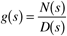 the zeros are the roots of the numerator polynomial, N(s). The inverse of the process transfer function is 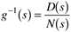 That is, the zeros of g(s) are the poles of g–1(s). A RHP zero then results in an inverse transfer function with a RHP pole, which is unstable. Some model-based control strategies, such as IMC, make use of a model inverse for control system design. In Chapter 8, we found that the RHP zeros must be factored out, and that only a portion of the model could be inverted for controller design. Multivariable Transmission ZerosThe transmission zeros of a multivariable transfer function matrix are the values of s that cause the input-output matrix to lose rank. That is, the transmission zeros are the values of s that cause 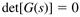 Similar to single variable systems, the multivariable transmission zeros become the poles of the inverse system. RHP transmission zeros for a particular transfer function matrix then become RHP poles for the inverse transfer function matrix (that is, the inverse is unstable). Again, a multivariable controller that simply tries to invert the process model will be unstable. We illustrate these concepts with the following example. Here we use the symbol z to represent the zero. Example 14.1: Calculation of Transmission ZerosThe calculation of transmission zeros are illustrated for two different systems (A and B). System A Consider the transfer function matrix, where the time unit is minutes 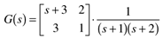 The determinant of G(s) is 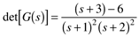 and solving for det[G(s)] = 0, 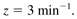 We can also see that the rank of the G matrix drops to 1 when s = 3 min-1, 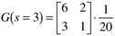 since the first column of the matrix is now a multiplicative factor (3) of the second column. Note that although the zero of the g11 element is -3 min-1, the matrix transmission zero is +3 min-1 (that is, a RHP transmission zero)! The inverse[1] of the transfer function matrix is
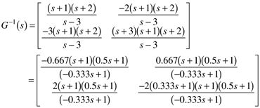 which has an unstable pole of p = +3, as expected. It is possible for an individual element to have a RHP (positive) zero while the matrix transmission zero is in the left-half-plane (negative); this is illustrated by the following transfer function matrix. System B Consider the transfer function matrix 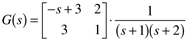 which differs from system A by the RHP zero in the g11(s) transfer function. The determinant of G(s) is 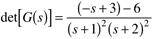 and solving for det[G(s)] = 0, 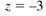 We can also see that the rank of the G matrix drops to 1 when s = -3, 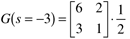 since the first column of the matrix is (like system A) a multiplicative factor (3) of the second column. Note that although the zero of the g11 element is +3 (RHP), the matrix transmission zero is -3 min-1 (that is, a left-half-plane transmission zero). It is left to the reader to show that the inverse of this matrix has a stable pole at -3 min-1. An example of a physical process with a RHP transmission zero is shown in Figure 14-1. This is a laboratory-scale system developed by Johansson (2000) to study the effect of operating condition on the location of the transmission zeros. The inputs are the voltages to the pumps (v1, v2) and the outputs are the voltage measurements of the height of liquid in tanks 1 and 2 (y1, y2). The flow from pump 1 is split between tanks 1 and 4, while the flow from pump 2 is split between tanks 2 and 3. Depending on the actual flow splits, it is possible to obtain a positive RHP transmission zero. Numerical details are presented in Example 14.2. Figure 14-1. Quadruple tank control problem.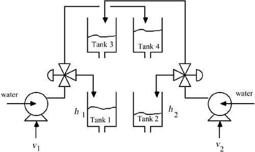 Although this is a "toy" problem, you can see how some processes with recycle might have similar behavior. Example 14.2: Quadruple Tank Problem (Johansson, 2000)This tank system can be operating at two operating points. The first one has two transmission zeros that are in the left-half plane (negative), while the second has a RHP transmission zero. Operating Point 1 Operating point 1 has the following steady-state inputs and outputs: 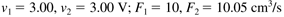
The result is the process transfer function matrix 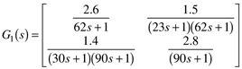 where the gains are volts/volt, and the timescale is seconds. The transmission zeros are 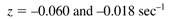 which are both in the left-half-plane (so the matrix inverse will be stable). Operating Point 2 Operating point 2 has the following steady-state inputs and outputs 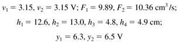 This operating point has the transfer function matrix 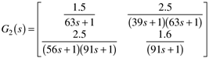 The transmission zeros are 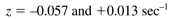 Notice that there is a RHP transmission zero, so the matrix inverse will be unstable. In Exercise 1, you will find that the feedback control performance of this operating point is severely limited compared with the first operating point. The MATLAB routine for calculating transmission zeros is discussed in Section 14.7. |
| [ Team LiB ] |
|